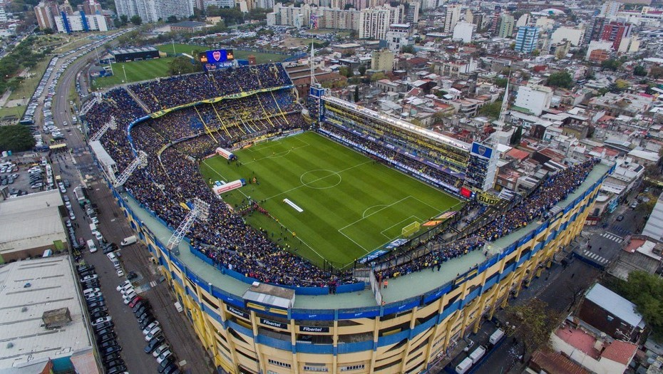
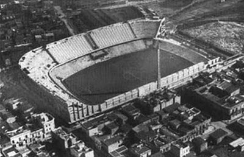

La historia del Club Atlético Boca Juniors transcurre desde 1905, año en que se fundó como club en Buenos Aires. El fútbol fue desde los comienzos la esencia del club y aunque posteriormente el crecimiento de la institución promovió el desarrollo de otras actividades, aquel permaneció como la disciplina deportiva sobre la cual se sustenta la entidad y la que le valió su reconocimiento a nivel nacional e internacional. La historia de Boca Juniors se divide en dos períodos: la época amateur hasta 1930 y la profesional desde 1931 en adelante.
En el nuevo milenio, Boca ganó su primer triplete, al ganar la Copa Libertadores, el Torneo Apertura y la Copa Intercontinental. Copa Libertadores: Con el equipo bicampeón de la temporada 1998/99 en la competición sudamericana, los xeneizes lograron conquistar el máximo torneo continental después de veintidós años de espera. La tercera Copa volvió a las vitrinas azul y oro tras vencer en la final al vigente campeón, Palmeiras, luego de empatar 2:2 en La Bombonera y 0:0 en el Morumbi. El partido se definió por los penales en donde Boca acertó los cuatro que pateó y Óscar Córdoba se convirtió en el héroe de la noche al atajar dos remates. Torneo Apertura: Ya sin Walter Samuel ni Rodolfo Arruabarrena, el equipo se impuso sobre sus rivales, alcanzando en la octava fecha la punta del campeonato. Pero una serie de malos resultados en las últimas fechas causaron la pérdida del liderazgo a manos de River Plate, a dos fechas de finalizar el campeonato. River Plate, sin embargo, perdió inesperadamente contra Huracán, último en la tabla de posiciones, permitiéndole a Boca obtener el campeonato. Copa Intercontinental: A su vez, como campeón de América, Boca debió enfrentar por la Copa Intercontinental, al campeón de Europa, el Real Madrid de Roberto Carlos, Raúl y Figo, designado el año anterior por la FIFA como el mejor equipo del siglo XX y ampliamente favorito en los pronósticos de la prensa especializada y las apuestas. Boca salió al campo de juego sin complejos y sorprendió a los españoles al anotar dos goles de Martín Palermo en los primeros cinco minutos. Si bien el Real Madrid descontó rápido gracias a un zurdazo de Roberto Carlos (11’) y dominó a su rival de allí en adelante, la falta de claridad y mala puntería fueron apagando su ímpetu. En el partido resultó decisiva la habilidad de Juan Román Riquelme, que con su habilidad para retener el balón, enfrió el partido y quitó juego a los madrileños, quienes terminaron tirando pelotazos frontales, facilitando así la tarea a la defensa argentina y también Aníbal Matellán, quien tuvo un notable partido anulando a la estrella del rival, Luís Figo. El marcador no pudo ser cambiado y Boca conquistó su segundo título intercontinental
El Estadio Alberto J. Armando, popularmente conocido como La Bombonera, es un estadio de fútbol, propiedad del Club Atlético Boca Juniors. Se ubica en el barrio de La Boca en la ciudad de Buenos Aires, Argentina. Se presume que tiene una capacidad para 49.000 personas. Por su aforo, es el séptimo estadio argentino
El sábado 25 de mayo de 1940, fue el día en que La Bombonera quedó oficialmente inaugurada con eventos que comenzaron temprano. A las nueve horas aproximadamente, una caravana de autos partió desde la sede social en Almirante Brown 967. A las 11, el entonces presidente Camilo Cichero, cortó las cintas celestes y blancas para habilitar el estadio en forma oficial. El cardenal Copello, a continuación, bendijo las instalaciones. Luego vinieron los desfiles de exdirigentes y jugadores, entre otras figuras y emblemas del club
